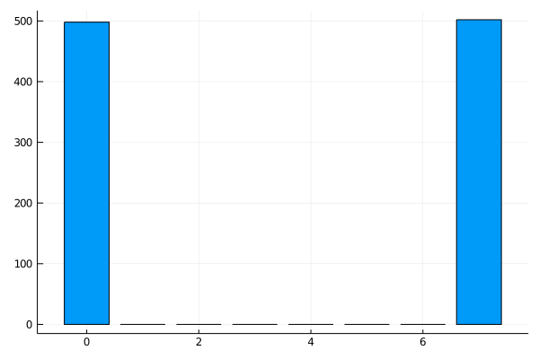

Yao.jlで量子エンタングルメントを理解したい（後編）
前回のベル状態を3量子ビット... 4量子ビットと拡張します。 こういう3量子ビット以上の状態をGHZ状態といいます（2を含めることもある模様）。 発見者のGreenbergerさん、Horneさん、Zeilingerにちなんだ名前ですね。
3量子ビットをもつれさせたい！
今回は新しい知識を必要としないので、早速、回路図を示していきます。じゃん。 階段状にCNOTゲートを配置していく感じです。 簡単。ではでは実装です。
GHZ_3circuit = chain(
3, # 3qubits
put(1=>H),
control(1,2=>X),
control(2,3=>X),
)
results = zero_state(3) |> GHZ3_circuit |> r->measure(r, nshots = 1000)
hist = fit(Histogram, Int.(results), 0:2^3)
GHZ3_graff = bar(hist.edges[1] .- 0.5, hist.weights, legend =:none)
ほんとに、新しい知識がないですね。結果はこんな感じ。
グラフより、\( |000 \rangle , |111 \rangle \)をそれぞれ大体500回ずつ、観測したことがわかります。 ちなみに、回路の構成は別のものもあります。 こちらを見るとわかると思います。 さて、2量子ビットのときと同じようになっていますが、数式で示すとどのようになるのでしょうか。
数式で見てみる
4量子ビットもエンタングルメントしてみる
さて、4量子ビットでも同じように階段状にするだけで作れますが、ここはYao.jlのチュートリアルに基づいて進めていきましょう。 コードと結果は以下のとおりです。図は省略させていただきます。
GHZ_4circuit = chain(
4, # 4qubits
put(1=>X),
repeat(H, 2:4),
control(2, 1=>X),
control(4, 3=>X),
control(3, 1=>X),
control(4, 3=>X),
repeat(H, 1:4), # Hgate, 1:4 qubits
)
results = zero_state(4) |> GHZ_4circuit |> r->measure(r, nshots = 1000)
hist = fit(Histogram, Int.(results), 0:2^4)
GHZ4_graff = bar(hist.edges[1] .- 0.5, hist.weights, legend =:none)

repeatという新しい関数がでてきました。
前半で述べた通り、第一引数の量子ビット数の宣言は省略されています。
第二引数ではゲートの指定をし、第三引数でどの量子ビットに作用させるかを決めます。
これは、タプル(x, y)や上のように1:4、すなわち1から4のrange型でも大丈夫です。
きついかもだが、計算してみた
Related Articles
-

量子コンピュータ入門 - なぜ早いのか